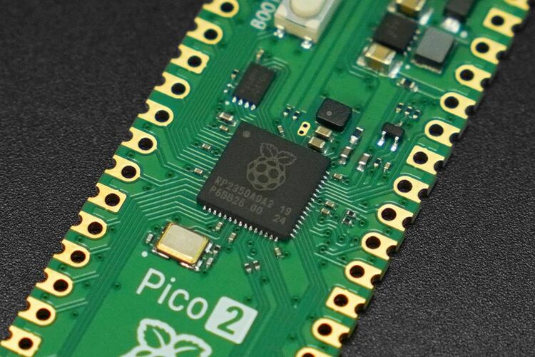

<div *ngIf="!showSensorList" class="device-container d-flex flex-wrap">
  <div *ngFor="let node of nodes" class="card-container">
    <p-card [ngClass]="{ inactive: !node.is_online || !node.is_active }">
      <ng-template pTemplate="header">
        <h6>
          {{ node.name }}
        </h6>
      </ng-template>
      <form>
        <div class="row">
          <div class="col-6">
            <app-label-value label="ID" [value]="node.id"></app-label-value>
            <!-- <div class="row">
                        UID:
                        {{ node.uid }}
                      </div> -->
            <app-label-value
              label="Created Date"
              [value]="node.created_at"
              [isDate]="true"
            ></app-label-value>
            <app-label-value
              label="Update Date"
              [value]="node.updated_at"
              [isDate]="true"
            ></app-label-value>
            <app-label-value
              label="Description"
              [value]="node.desc"
            ></app-label-value>

            <app-label-value
              label="Online"
              [value]="node.is_online ? 'Yes' : 'No'"
            ></app-label-value>
            <app-label-value
              label="Active"
              [value]="node.is_active ? 'Yes' : 'No'"
            ></app-label-value>
          </div>
          <div class="col-6">
            
          </div>
        </div>
      </form>
      <ng-template pTemplate="footer">
        <div class="d-flex justify-content-end">
          <button
            *ngIf="node.is_online && node.is_active"
            type="button"
            class="btn btn-primary"
            (click)="sensorList(node)"
          >
            Sensor List >>
          </button>
          <button
            *ngIf="!node.is_online || !node.is_active"
            type="button"
            class="btn btn-secondary"
            disabled
          >
            Sensor List >>
          </button>
        </div>
      </ng-template>
    </p-card>
  </div>
</div>

<div *ngIf="showSensorList" class="sensor-list">
  <app-sensor-list [node]="selectedNode" (returnToParent)="closeList()"></app-sensor-list>
</div>
